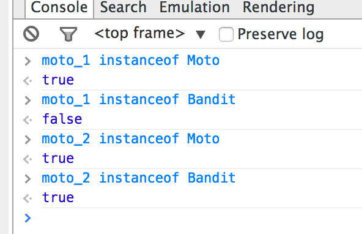

github : https://github.com/brunosimon/hetic-p2018
site : http://bruno-simon.com/hetic/p2018/
contact : bruno.simon@hetic.net - @bruno_simon
Appelée POO ou OOP
Méthode de programmation consistant à séparer les différents composants d'une logique en objets
Un objet possède des propriétés (ou attributs) et des méthodes (ou fonctions)
Utilisé en Java, C#, Objective C, PHP, Ruby, AS3, Javascript, ...
Une moto peut être considérée comme un objet en programmation.
Ses propriétés sont par exemple : couleur, vitesse, immatriculation, etc.
Ses méthodes sont par exemple : démarrer, accélerer, freiner, etc.
Un exemple javascript : Math
Ses propriétés : Math.PI, Math.E, etc.
Ses méthodes : Math.cos(), Math.sin(), Math.round(), etc.
console.log(Math.cos(Math.PI)); // -1
Indépendance des éléments
Code plus propre
Plus facile à entretenir
Plus lisible
Plus logique
Plus pro
var moto_1 = {
color : 'black',
speed : 0,
accelerate : function()
{
this.speed += 1;
}
};
this à l'intérieur des méthode fait référence à l'objet moto_1 ou moto_2
On appelle ça le context
Cette méthode fonctionne bien, mais pose problème quand on a plusieurs objets du même type
// Première moto
var moto_1 = {
color : 'black',
speed : 0,
accelerate : function()
{
this.speed += 1;
}
};
// Deuxième moto
var moto_2 = {
color : 'red',
speed : 0,
accelerate : function()
{
this.speed += 1;
}
};
// Troisième moto
var moto_3 = {
color : 'red',
speed : 0,
accelerate : function()
{
this.speed += 1;
}
};
// Class Moto
var Moto = function(color)
{
// Propriétés
this.color = color;
this.speed = 0;
// Méthodes publiques
this.accelerate = function()
{
this.speed += 1;
};
};
// Initialisation
var moto_1 = new Moto('black'),
moto_2 = new Moto('red'),
moto_2 = new Moto('blue');
Un constructeur (on peut parler de Class) se créé à partir d'une fonction
L'initialisation se fait avec new
Un seul constructeur permet d'instancier plusieurs objets
Cette méthode fonctionne bien, mais pose problème si on souhaite créer une nouvelle classe héritant de notre constructeur
// Class Moto
var Moto = function(color)
{
// Propriétés
this.color = color;
};
Moto.prototype = {
color : 'black',
speed : 0,
accelerate : function()
{
this.speed += 1;
}
};
Chaque objet possède un prototype
Le propriétés et méthodes du prototype sont utilisées si elles n'existent pas dans l'instance
Cet objet fonctionne exactement comme le précédent sauf que nous allons pouvoir utiliser son protype pour faire de l'héritage
// Class Moto
var Moto = function(color)
{
// Propriétés
this.color = color;
};
Moto.prototype = {
color : 'black',
speed : 0,
accelerate : function()
{
this.speed += 1;
}
};
// Class Bandit (héritée de Moto)
var Bandit = function(){};
Bandit.prototype = Object.create(Moto.prototype);
Bandit.prototype.brand = 'Suzuki';
// Initialisation
var moto_1 = new Moto('red'),
moto_2 = new Bandit('blue');
Nous avons créé un objet Bandit qui hérite de l'objet Moto
La méthode utilisée est Object.create()
La méthode instanceof permet de connaître l'héritage

Coder orientée objet peut très bien se faire pour réaliser un site
Exemple : header, menu, page, ou n'importe quel élément
Les différents objets peuvent ensuite être séparés dans des fichiers et classés dans des dossiers
Héritage selon John Resig (le papa de jQuery)